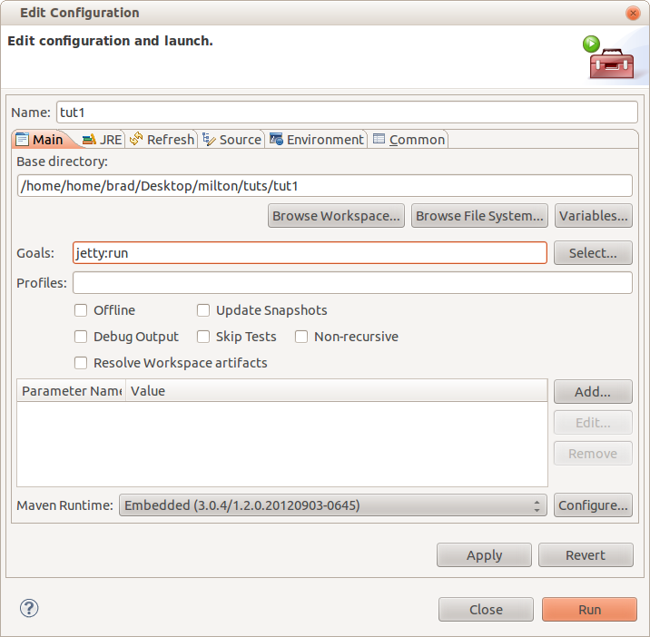
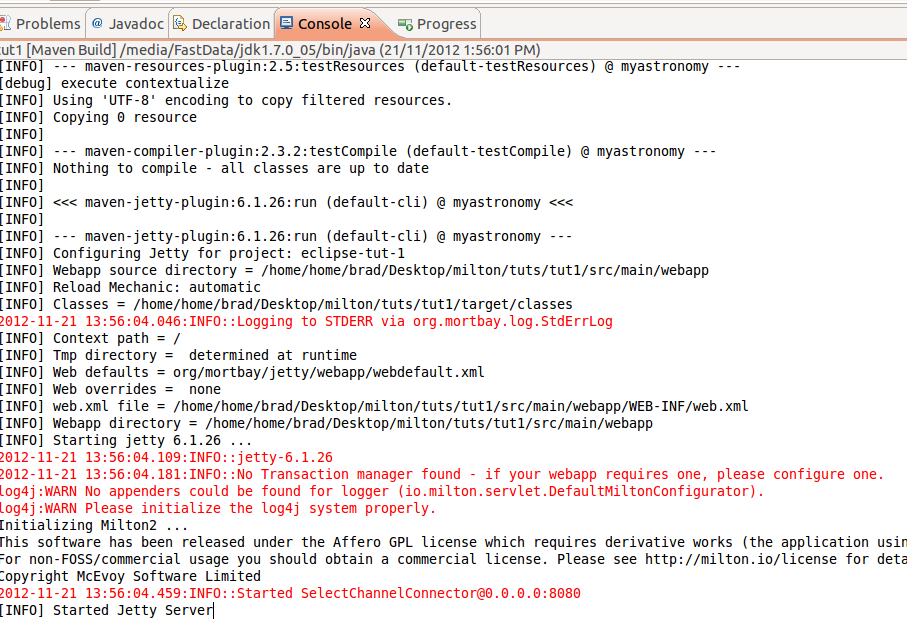

So now we get to the good bit. We're going to run the project from maven, and then use your webdav client of choice to navigate through the folders
From the project context menu, click Run As - Maven build. Then enter "jetty:run" in the Goals field and press Run:

If you get an error like "Address already in use" it means something else is running on port 8080, you'll need to find it and close it down (perhaps another java process)
The web app is running when you see [INFO] Started Jetty Server unless there was a previous error. The output should look like this:
